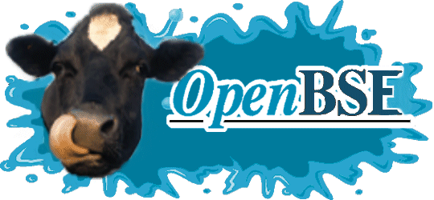

| 
|
|
Every day, every where and every site will be doomed by an undifieded human. It is like
an virus. No one can stop it! Humans make faults, faults make victims. The victim of
today is not unique. Internet is an tool of the Media. This tool is powered by companies with an monopole position. OpenBSE show you the weakness of these monopole companies, Signs: OpenBSE Greetz to: BeAuTiFuL AnGeL and Kitty |